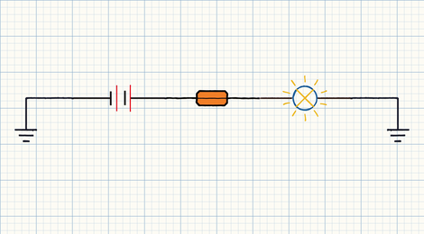
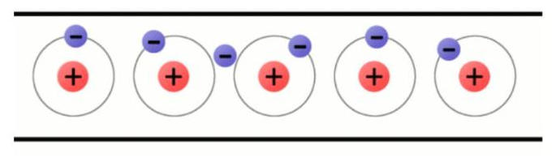
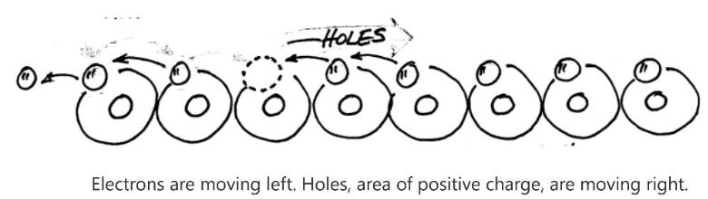
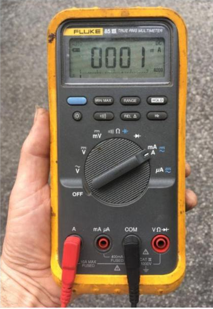
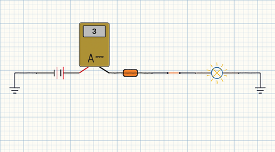
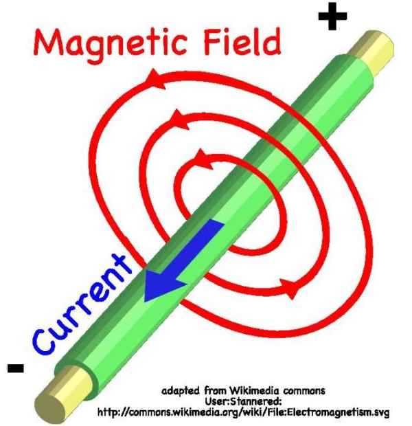
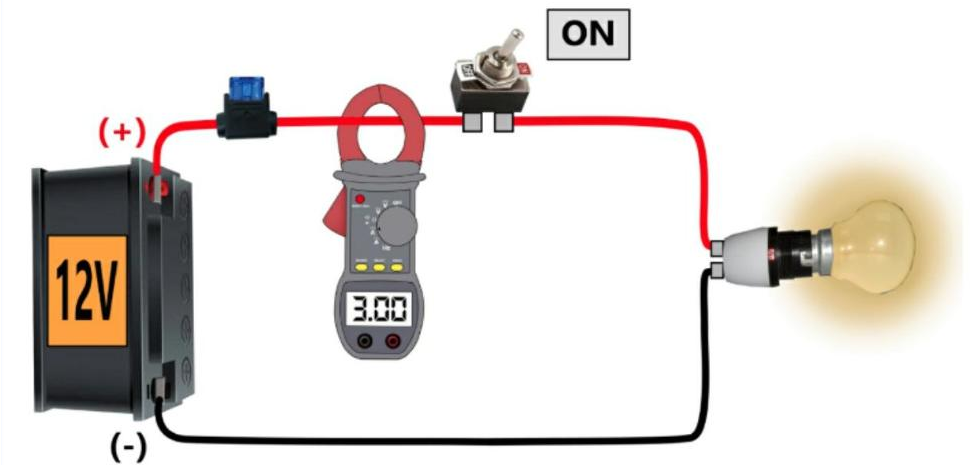

Current
- There are three basic requirements for every circuit. Once we understand this, we can be more effective at bypass and substitution testing during diagnosis of a circuit.
- Kirchhoff's Current Law.
- When is voltage-drop practical and how does current flow through circuit branches.
- How can I narrow possible failures when a fuse blows
- Practice with the internal DVOM ammeter and the clamp-style meter.
- Source: Batteries and Alternators
- Path: Wire Harness
- Load: Lights, Solenoids, Motors, etc…
- The resistance of the circuit load determines the circuit's current flow.
An open circuit will result in zero current flow even when your meter is connected correctly.

- There is no need to complicate this topic. When provided a Source, Load, and Path, current will act very predictably.
- Electrostatic force is one of the four fundamental forces of nature. It's as undeniable as gravity.
- Opposite charges attract and like charges repel. You have seen this in magnets and static.
- Gravity is strong over unimaginable distances and builds on itself, while Electrostatic force is strong over smaller distances and is always trying to equalize itself.

- Electron flow or Conventional flow. They are both happening at the same time, so it really doesn't matter.
- AC and DC. Alternating current means the current flow changes direction. The amount of direct current in a circuit can change intensity but will never change direction.
Conventional Current flow is from positive to negative. DC flows in only one direction.

- Use the correct jacks in your meter
- Meter must be in series with the circuit
- Be careful with your meter's fuse
1A = 1 amp, 1mA = 1 milliamp, 1µA = 1 micro-amp
| 1 Amp | 1,000mA = 1,000,000µA |
| 1mA | 1/1000 of 1 amp |
| 1µA | 1/1,000,000 of 1 amp |
You use your Ammeter to measure current. A good ammeter has extremely low resistance. A meter with a blown fuse will not measure current.

My internal DVOM ammeter must be inserted in series with the circuit I'm testing. Always in series with the load. I must use the current jacks of my meter. I can blow my fuse by connecting my meter in parallel or in a circuit with too much current.

- Current flow through a conductor creates a magnetic field around the conductor
- A conductor (that is part of a complete circuit) traveling through a magnetic field will have a current generated in it.


I do not need to open a circuit to test current with a clamp style ammeter. Clamp measures the magnetic field around the conductor. I need to 'zero' the clamp. I must use the voltage jacks in my meter.